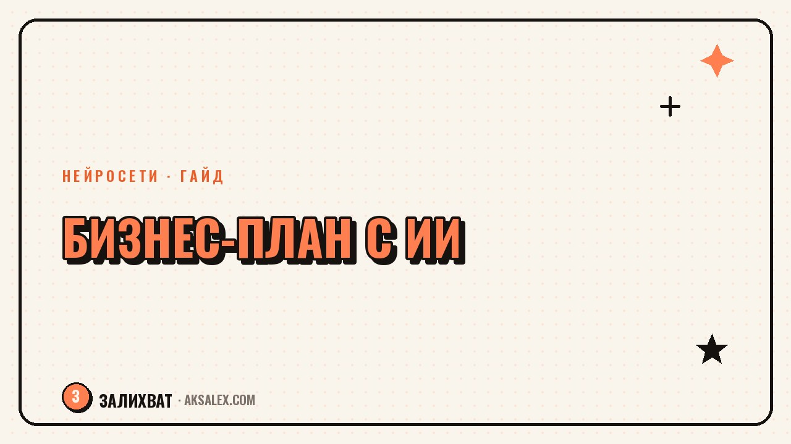

Как написать бизнес-план с помощью нейросети

Бизнес-план обычно откладывают именно из-за объёма: непонятно, с чего начать и как разложить идею по разделам. Нейросеть закрывает эту проблему - она за минуты собирает структуру документа и черновик каждого раздела, а тебе остаётся наполнить его реальными цифрами и фактами о своём деле.
Зачем нейросеть в бизнес-плане и чего от неё не ждать
Нейросеть хорошо знает, как устроен типовой бизнес-план, потому что таких документов в её обучающих данных были тысячи. Она быстро предложит структуру, поможет сформулировать разделы и подтянет общую логику текста.
Чего нейросеть не знает - это твоего реального рынка, конкурентов в твоём городе и точных цифр вложений. Любые цифры, которые она предложит без твоих исходных данных, стоит воспринимать как пример структуры, а не как готовый расчёт.
Что нейросеть делает быстрее человека
- Собирает структуру плана под конкретный тип бизнеса
- Формулирует разделы понятным деловым языком
- Считает базовые формулы, если дать ей исходные цифры
- Приводит документ к единому стилю после правок
Структура, которую нейросеть соберёт за один запрос
Начни с общего промпта на структуру, а не пытайся сразу писать весь план целиком. Так проще увидеть, каких разделов не хватает, и не упустить важное на старте.
Пример первого промпта
'Я открываю кофейню на районе с высокой проходимостью. Составь структуру бизнес-плана из разделов с коротким описанием, что должно быть в каждом. Учти, что план нужен для себя, а не для банка или инвестора'.
- Описание бизнеса и продукта
- Анализ рынка и конкурентов
- Маркетинг и привлечение клиентов
- Финансовый план и точка безубыточности
- Риски и что делать, если план не сработает
Раздел за разделом: что просить у нейросети
Дальше план собирается по частям: сначала загружаешь свои вводные данные по разделу, потом просишь нейросеть свести их в текст. Для описания бизнеса достаточно пары абзацев о продукте и целевой аудитории - остальное нейросеть развернёт сама.
Для финансового раздела правило другое: сначала считаешь реальные цифры сам или с бухгалтером, а нейросети отдаёшь только оформление - сведение в таблицу, расчёт точки безубыточности по формуле, которую ты проверяешь вручную.
Нейросеть отлично упаковывает то, что ты уже знаешь о своём деле, но не придумывает за тебя рынок и не гарантирует, что план сработает.
Где нейросеть подводит с цифрами и рынком
Главный риск - попросить нейросеть 'посчитать примерную выручку кофейни в моём городе' и получить правдоподобно звучащее, но выдуманное число. Модель не знает реальных данных твоего рынка и достраивает цифру по общей логике, а не по фактам.
Та же история с конкурентами: нейросеть может назвать сети, которых нет в твоём районе, или пропустить локальных игроков. Раздел про рынок и конкурентов стоит собирать из собственного наблюдения и открытых данных, а нейросети отдавать только оформление выводов в текст.
Инструменты и как довести план до готового вида
Для черновика структуры и текста разделов подойдёт любая из крупных нейросетей общего назначения - выбор чаще зависит от привычки, а не от принципиальной разницы в качестве для этой задачи.
| Этап плана | Что делает нейросеть | Что проверяешь сам |
|---|---|---|
| Структура документа | предлагает разделы и логику | убираешь лишнее под свой бизнес |
| Описание и маркетинг | пишет черновик текста | уточняешь факты о продукте |
| Финансы | оформляет расчёт в таблицу | цифры и формулы вручную |
| Рынок и конкуренты | сводит выводы в абзац | источник данных - твоё наблюдение |
Порядок сборки плана по шагам
- Шаг 1: попроси структуру под свой тип бизнеса
- Шаг 2: собери реальные цифры отдельно от нейросети
- Шаг 3: отдавай нейросети готовые факты для оформления текста
- Шаг 4: перечитай план целиком и проверь цифры на здравый смысл
Частые вопросы
Может ли нейросеть написать весь бизнес-план сама?
Она соберёт структуру и черновой текст, но реальные цифры о рынке и вложениях нужно давать ей самому. Без твоих исходных данных план получится общим и оторванным от реальности.
Можно ли доверять расчётам нейросети в финансовом разделе?
Формулы вроде точки безубыточности она считает верно, если дать точные вводные цифры. А вот прогнозы выручки без реальных данных лучше не использовать вообще.
Подойдёт ли такой бизнес-план для банка или инвестора?
Как черновик и основа для доработки - да. Но перед подачей его стоит проверить с бухгалтером или финансистом, потому что банки и инвесторы смотрят на конкретные цифры и источники.
Сколько времени занимает бизнес-план с нейросетью?
Структуру и черновик разделов реально собрать за один-два вечера. Сбор реальных цифр по рынку и финансам всё равно занимает отдельное время, которое нейросеть не сокращает.
Какую нейросеть лучше взять для бизнес-плана?
Любую из крупных - ChatGPT, Claude, GigaChat или YandexGPT - результат по структуре и тексту будет похожим. Выбирай ту, с которой удобнее работать именно тебе.
Раз тема оказалась полезной, вот что почитать следующим. Нейросети для бизнеса без сложного внедрения: с какой задачи начать и какие сервисы взять для старта.
Читать статью →а не вручную